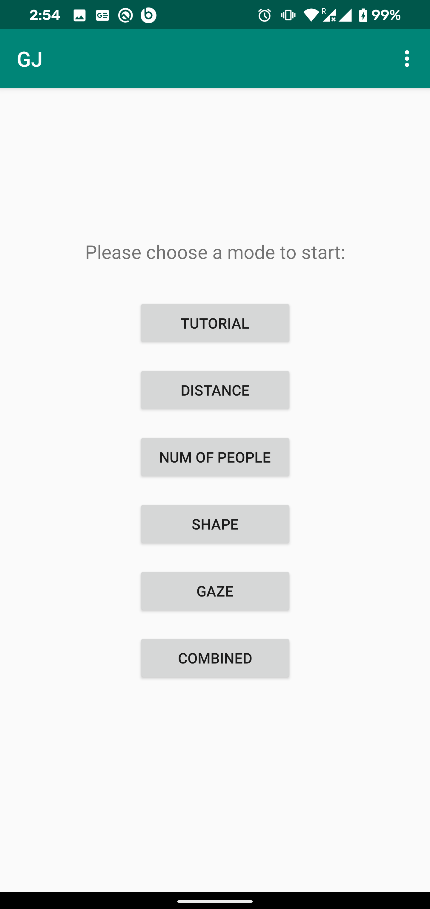
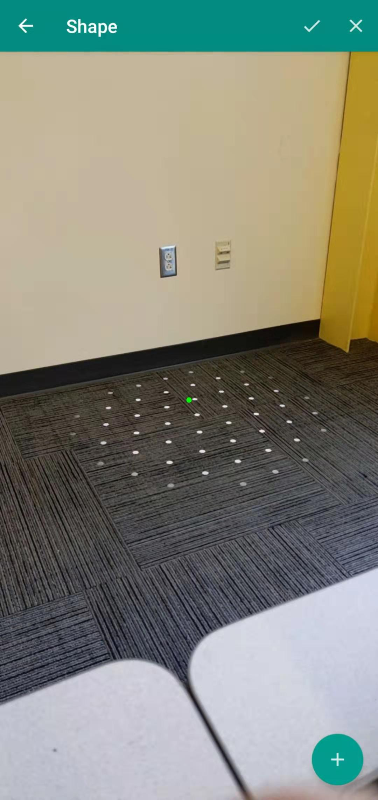
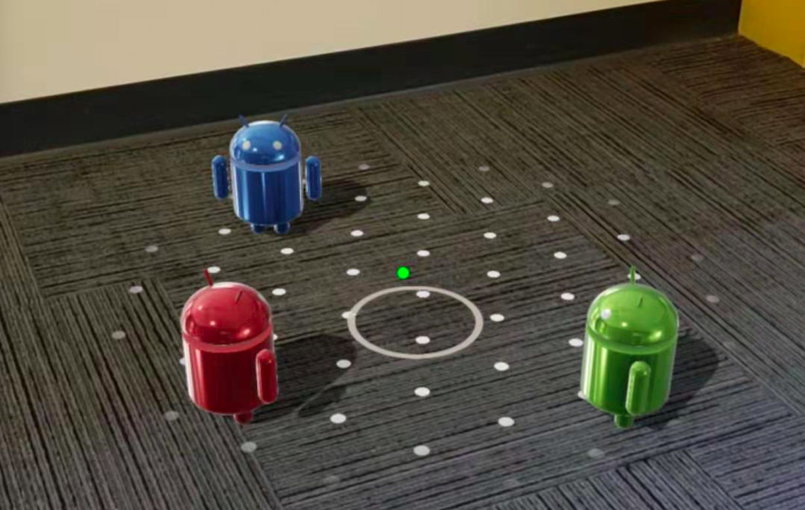
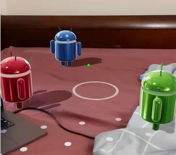

Design & Implementation
Take a closer look at the features in AR Group Joining Practice
Main menu
When the user opens the program, they can choose one of the six modes to start, which are the four factors of group joining (“number of people”, “gaze”, “shape”, “body orientation”), “Tutorial” and “Combined”.
Surface Detection
After user’s selection, they will be guided into the AR view with a pointer at the center and the “add” button at the bottom-right corner. When the program successfully detects a valid surface, the pointer will turn from white to green.
Practice Scenario Rendering
the user can place the virtual agents via the “add” button. Then the user can walk around and observe the placed virtual agents through the screen.
 Instruction Prompt
When the user decides whether the current group formed by the virtual agents is available to join or not, he or she can press the “check” button at the top-right corner and verify with the given comment.

Contact Us
Get in touch and let's make something great together. Let's turn your idea on an even greater product.
Where To Find Us
Gao Fan
fgao at u.rochester.edu
Meiwen Zhou
mzhou26 at u.rochester.edu
University of Rochester